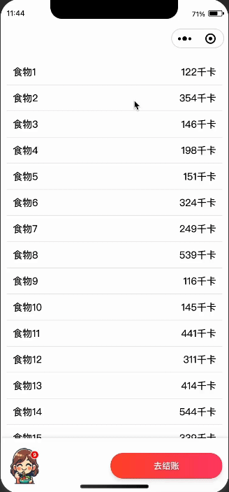

因为最近在做一个添加购物车的页面,涉及到贝塞尔曲线绘制技术,在用户点击添加到购物车时，会出现一个小球从点击位置飞向购物车图标的位置，模拟商品被添加到购物车的动画效果。

与是网上查阅资料,下面简单介绍下关于贝塞尔曲线的一些原理知识。
贝塞尔曲线通过一组控制点来定义其形状。最常见的贝塞尔曲线是二次和三次贝塞尔曲线。下面通过图文介绍其原理。
1. 二次贝塞尔曲线
二次贝塞尔曲线由三个点定义：起点 P0、控制点 P1 和终点 P2。曲线的方程如下：
B(t)=(1−t)2P0+2(1−t)tP1+t2P2B(t) = (1 - t)^2 P0 + 2(1 - t)t P1 + t^2 P2B(t)=(1−t)2P0+2(1−t)tP1+t2P2
其中 ttt 是一个从 0 到 1 的参数，控制曲线从 P0 移动到 P2。

图1：二次贝塞尔曲线
2. 三次贝塞尔曲线
三次贝塞尔曲线由四个点定义：起点 P0、两个控制点 P1 和 P2、以及终点 P3。曲线的方程如下：
B(t)=(1−t)3P0+3(1−t)2tP1+3(1−t)t2P2+t3P3B(t) = (1 - t)^3 P0 + 3(1 - t)^2 t P1 + 3(1 - t) t^2 P2 + t^3 P3B(t)=(1−t)3P0+3(1−t)2tP1+3(1−t)t2P2+t3P3
同样，ttt 是一个从 0 到 1 的参数。

图2：三次贝塞尔曲线
贝塞尔曲线的构建步骤
以三次贝塞尔曲线为例：
- 线性插值：从 P0 到 P1、从 P1 到 P2 和从 P2 到 P3 进行线性插值，生成新的点 Q0、Q1 和 Q2。
- 二次插值：对 Q0 到 Q1 和 Q1 到 Q2 进行线性插值，生成新的点 R0 和 R1。
- 三次插值：对 R0 到 R1 进行线性插值，生成最终的贝塞尔曲线点 B(t)。
通过这个过程，贝塞尔曲线的形状由控制点决定，不同的控制点位置会生成不同形状的曲线。
贝塞尔曲线的应用
- 矢量图形设计：贝塞尔曲线广泛应用于矢量图形软件（如 Adobe Illustrator 和 CorelDRAW）中，用于绘制平滑的曲线和形状。
- 动画：贝塞尔曲线用于描述物体的运动路径，使动画看起来更加自然和流畅。
- UI设计：在 UI 设计中，贝塞尔曲线用于定义过渡动画，使界面交互更加生动。
贝塞尔曲线的优点
- 平滑性：通过调整控制点，可以绘制非常平滑的曲线。
- 可控性：控制点的位置直接影响曲线的形状，便于设计师精确调整。
- 效率高：计算贝塞尔曲线的点只需要简单的线性插值操作，计算效率高。
组件目录
1
2
3
4
5
6
7
8
9
10
11
12
13
14
15
16
17
18
| parabola-ball/
├── components/
│ ├── parabola-ball/
│ │ ├── index.js
│ │ ├── index.wxml
│ │ ├── index.wxss
│ │ └── index.json
├── pages/
│ ├── index/
│ │ ├── index.js
│ │ ├── index.wxml
│ │ ├── index.wxss
│ │ └── index.json
├── app.js
├── app.json
├── app.wxss
└── README.md
|
组件介绍
index.js
1
2
3
4
5
6
7
8
| observers: {
'startX, startY': function(startX, startY) {
let style = `--startX:${startX}px;--startY:${startY}px;--endX: ${this.data.endX};--endY: ${this.data.endY};`;
this.setData({
style
});
}
}
|
index.wxml
1
2
| <view class="container animation" wx:if="{{show}}" style="{{style}}" bindanimationend="onAnimaEnd">
</view>
|
show:是否展示动画。onAnimaEnd:动画结束的回调函数。
index.wxss
1
2
3
4
5
6
7
8
| .animation {
animation-fill-mode: forwards;
animation: top-y 0.3s cubic-bezier(0, 0.3, 0.3, 1) forwards,
drop-y 0.4s cubic-bezier(0.7, 0, 1, 0.7) 0.3s forwards,
scale-size 0.3s cubic-bezier(0.48, 0.33, 0.24, 1.18) 0.3s forwards,
throwX 0.7s linear forwards,
show-hide 0.7s linear forwards;
}
|
css主要是cubic-bezier()来定义贝塞尔曲线的函数,其他是一些基本的动画和样式,该函数一共四个参数,可以结合以上内容理解P0和P3的关系,也可以使用cubic-bezier 一个神奇的可视化交互工具,可以通过拖动来控制动画的形状,感兴趣的可以去看一下。
使用方式
- 引入组件
在页面的 JSON 文件中引入 parabola-ball 组件。
1
2
3
4
5
| {
"usingComponents": {
"ball": "/components/parabola-ball/index"
}
}
|
- 在页面中使用组件
在页面的 WXML 文件中使用 parabola-ball 组件。
1
2
3
4
5
6
7
8
9
| <view class="page">
<-你的组件->
<ball
show="{{show}}"
startX="{{startX}}"
startY="{{startY}}"
bind:animationHasDone="handleAnimationEnd">
</ball>
</view>
|
- 页面逻辑
在页面的 JS 文件中实现逻辑控制，包括点击事件处理和动画完成处理。
1
2
3
4
5
6
7
8
9
10
11
12
13
14
15
16
17
18
19
20
21
22
23
24
25
26
27
28
29
30
31
32
33
34
35
36
37
38
39
40
41
42
43
44
45
46
47
48
49
50
51
52
53
54
55
56
57
58
| Page({
data: {
dataList: [],
addList: [],
show: false,
endX: '15vw',
endY: '92vh'
},
onLoad: function () {
let list = this.generateTestData(20);
this.setData({
dataList: list
});
},
generateTestData(count) {
const testData = [];
for (let i = 1; i <= count; i++) {
testData.push({
id: `${i}`,
text: `食物${i}`,
info: {
"能量": `${Math.floor(Math.random() * 500) + 50}千卡`,
},
});
}
return testData;
},
onItemTap(event) {
const item = event.currentTarget.dataset.item;
const { clientX, clientY } = event.touches[0];
this.setData({
showBall: true,
position: {
startX: clientX,
startY: clientY
}
});
},
onAnimationHasDone() {
this.setData({
showBall: false
});
},
onAddToCart() {
const { currentFood, addList } = this.data;
if (!addList.some(item => item.id === currentFood.id)) {
addList.push(currentFood);
this.setData({
addList
});
}
}
});
|
github 地址